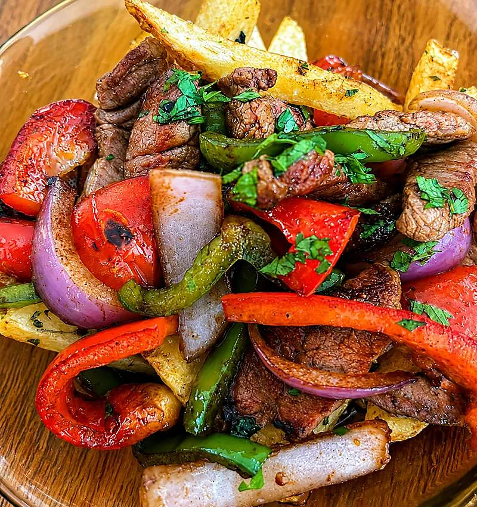
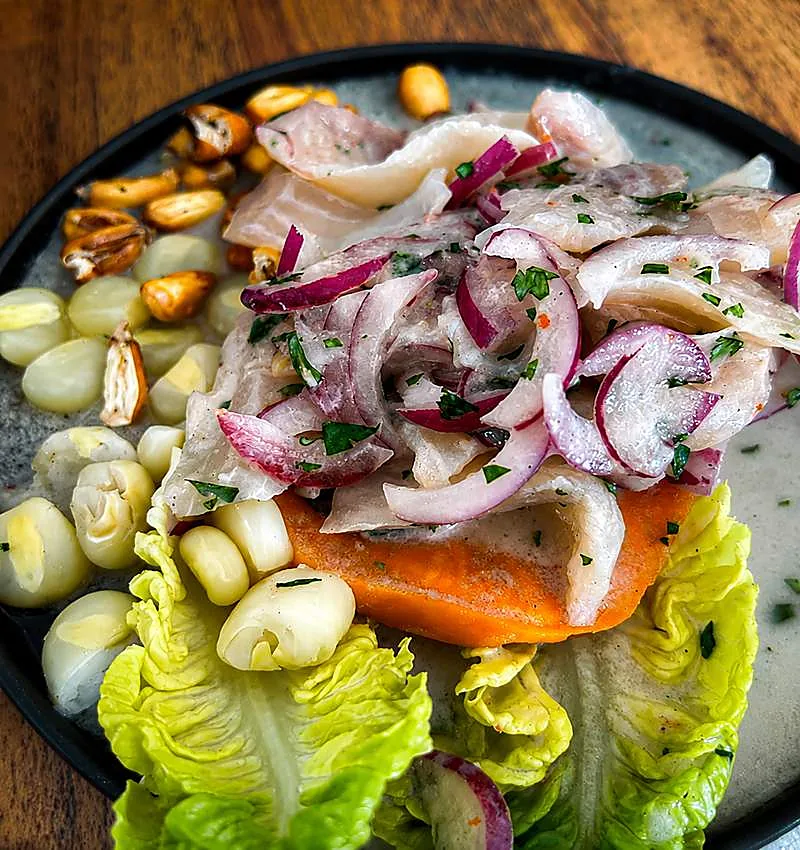
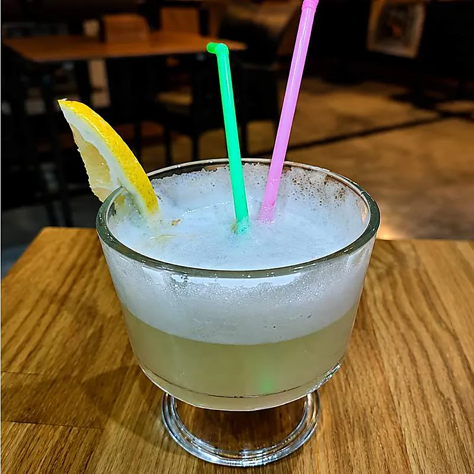
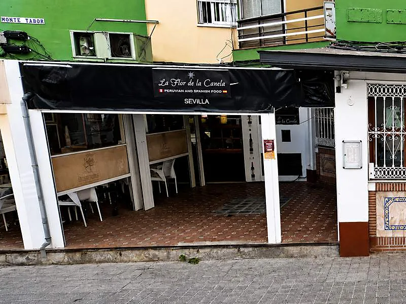
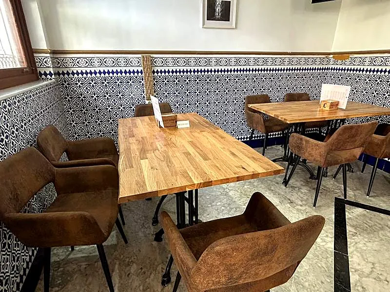
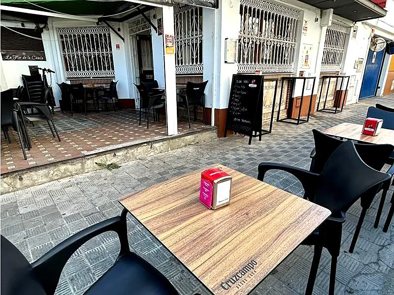

Cocina peruana
Ceviche con leche de tigre, causa limeña, anticuchos, ají de gallina y todo lo que sale del wok: lomo saltado, chaufa, tipakay. Criolla y chifa, como en Lima.
Ver cocina peruanaRestobar · Santa Justa · Sevilla
Cocina criolla peruana y tapeo sevillano de siempre, en la Avenida de El Greco. Terraza a la calle, azulejo dentro y pisco sour bien batido.




Av. de El Greco, 4 · el antiguo Enea
La casa
Se llama como el vals de Chabuca Granda que en Perú se sabe todo el mundo. Detrás está Dani Maguiño, que en 2006 abrió en la plaza Pintor Amalio García del Moral lo que él recuerda como el primer restaurante peruano de Sevilla.
Hoy esa cocina sigue en la Avenida de El Greco: terraza a la calle con rejas de forja, salón de azulejo azul y blanco, mesas de madera y una carta que se parte en dos. A un lado, ceviche, causa y lomo saltado al wok. Al otro, serranito, choco frito y cola de toro.
Dos cocinas

Ceviche con leche de tigre, causa limeña, anticuchos, ají de gallina y todo lo que sale del wok: lomo saltado, chaufa, tipakay. Criolla y chifa, como en Lima.
Ver cocina peruana
El tapeo de toda la vida: serranito, solomillo al whisky, choco frito, cazón en adobo, cola de toro y carrillada. Con una Cruzcampo bien fría.
Ver cocina españolaPara empezar
Carta digital
Casi todo se pide en tapa o en ración. Lo suyo es pedir de las dos cocinas y compartir.
Ocultar platos que lleven:
Según la carta del local. Si tienes una alergia, díselo siempre a quien te atienda.
Reservar
Rellena esto y se abre WhatsApp con el mensaje ya escrito. Te contestamos por ahí para confirmar.
Dónde estamos
En el barrio de San Pablo – Santa Justa, 41007. Terraza a la calle y salón dentro.